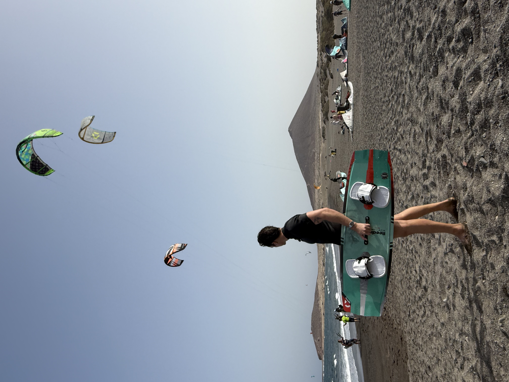

Qui est Saturnin Devins
L'un des analystes
les plus respectés
des marchés.
Saturnin Devins est l'un des analystes les plus respectés des marchés financiers et un entrepreneur prolifique qui rassemble des communautés d'investisseurs pour transformer leur façon d'apprendre, d'investir et de penser.
Investisseur depuis 2016, il a construit une expertise pointue à l'intersection de la macroéconomie globale, des marchés financiers et des actifs numériques.

La newsletter numéro 1 en France
En 2024, Saturnin lance Crypto & Macro, sa newsletter gratuite dans laquelle il développe ses idées d'investissement. En quelques années, Crypto & Macro est devenu une publication renommée et est aujourd'hui lu par plus de 50 000 lecteurs.
En savoir plusDémocratiser l'information financière
En 2026, Saturnin a fondé Léman Finance Partners, un média qui vise à démocratiser l'information sur les marchés financiers via des publications à haute valeur ajoutée comme Master Crypto, Ligne Directe Trading ou encore le Club Privé Crypto.
ForYield : la gestion d'actifs crypto régulée en Europe
Saturnin est également cofondateur de ForYield, une société d'investissement spécialisée dans la gestion d'actifs numériques. ForYield offre aux investisseurs particuliers et institutionnels un accès privilégié aux meilleures stratégies de rendement en crypto, grâce à l'expertise de Saturnin et son équipe.
En savoir plusL'école de l'excellence
Avant 2024, Saturnin a occupé des postes à responsabilités dans le secteur de la Finance : chez Panthéon Recherche, où il était Directeur des Publications Investissements pendant plus de 4 ans.
Au cours de son parcours, il a bénéficié de l'expertise de certains des experts en investissements les plus talentueux de notre époque.
Une voix suivie partout en France
Aujourd'hui, Saturnin vit en Suisse au bord du lac Léman. Ses recherches, ses vidéos et ses podcasts ont été visionnés plusieurs millions de fois, et plus de 100 000 personnes suivent ses réflexions quotidiennes à travers ses différentes plateformes.

Aventurier dans l'âme
Durant son temps libre, Saturnin est un grand sportif et un aventurier. Fasciné par le kitesurf, sport qu'il pratique aux quatre coins du monde.
Où qu'il voyage, il adore découvrir la gastronomie et les vins locaux — mais sa préférence reste la gastronomie italienne.